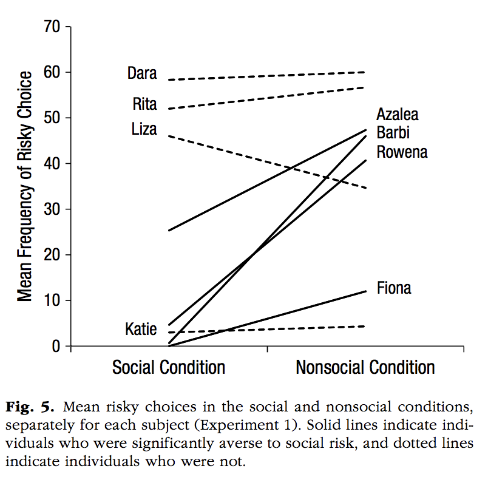
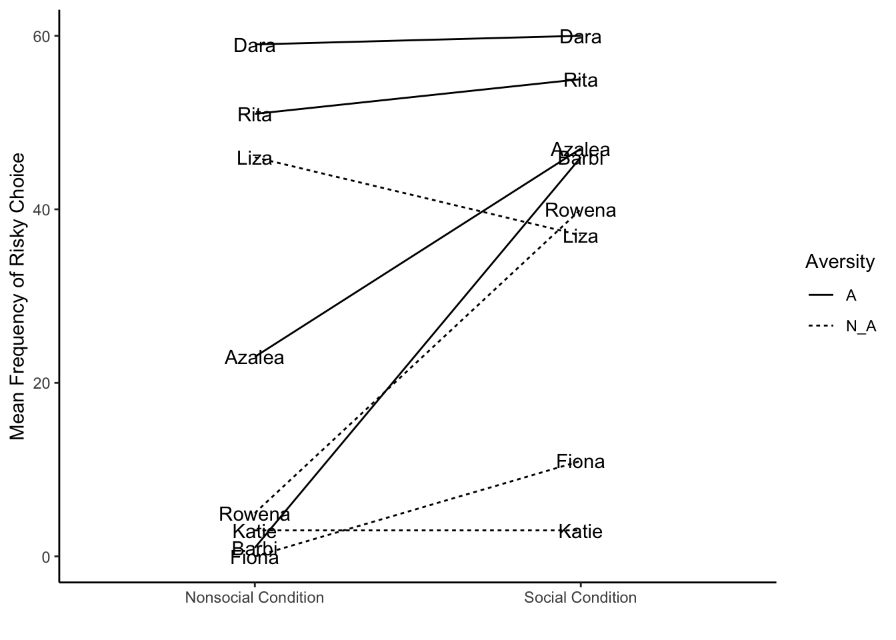
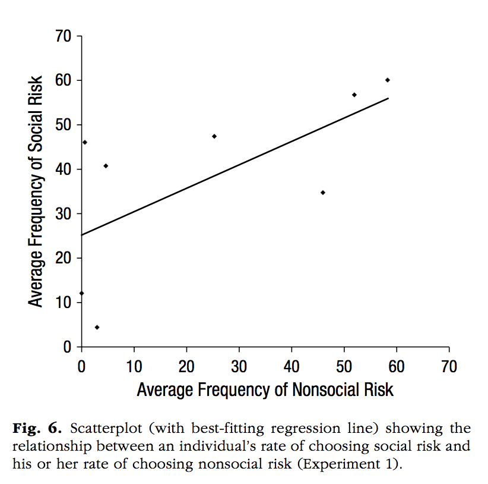
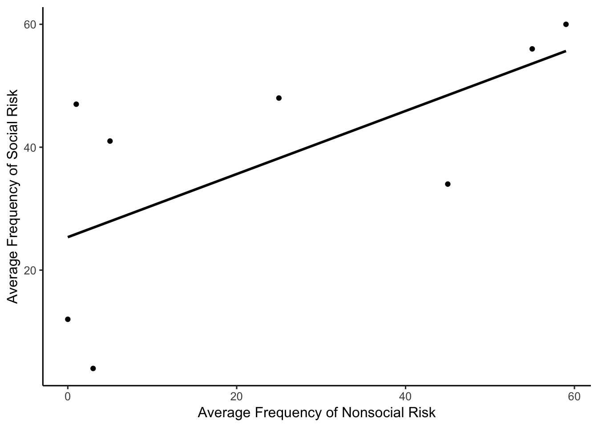
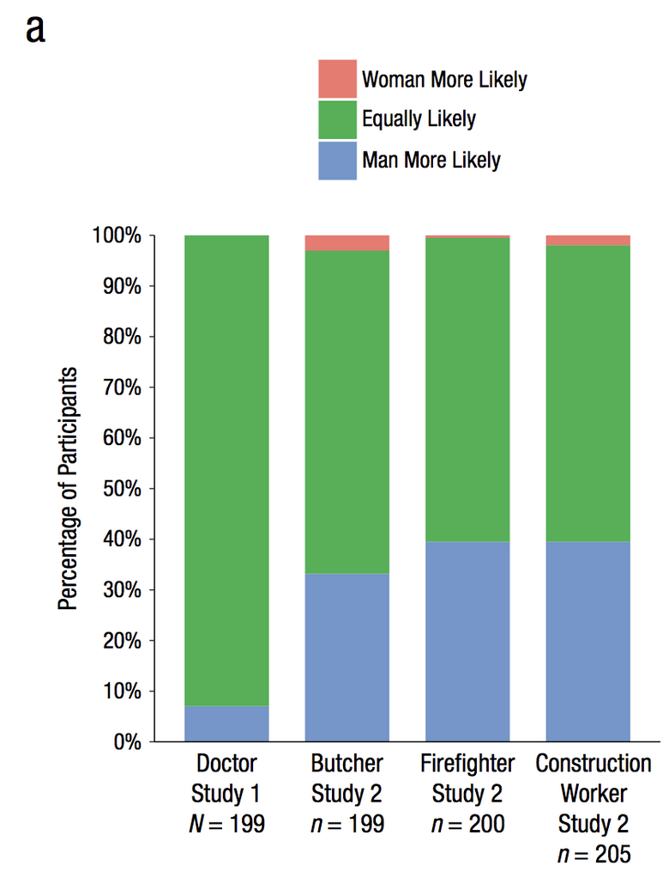
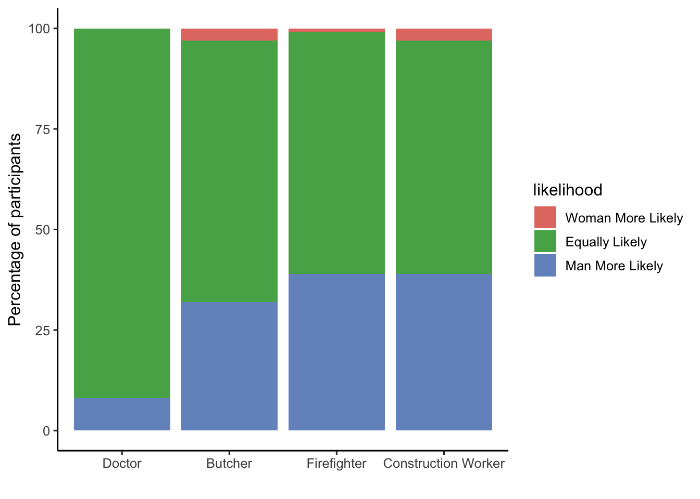

Figure 1
Names <- rep(c("Dara", "Rita","Liza", "Katie", "Azalea","Barbi","Rowena","Fiona"),each=2)
MF <- c(60,59,55,51,37,46,3,3,47,23,46,1,40,5,11,0)
Condition <- rep(c("Social Condition", "Nonsocial Condition"),4)
Aversity <- rep(c("Aversive","Not Aversive"), each=8)
new_df <- data.frame(Names, Condition, Aversity, MF)
new_df## Names Condition Aversity MF
## 1 Dara Social Condition Aversive 60
## 2 Dara Nonsocial Condition Aversive 59
## 3 Rita Social Condition Aversive 55
## 4 Rita Nonsocial Condition Aversive 51
## 5 Liza Social Condition Aversive 37
## 6 Liza Nonsocial Condition Aversive 46
## 7 Katie Social Condition Aversive 3
## 8 Katie Nonsocial Condition Aversive 3
## 9 Azalea Social Condition Not Aversive 47
## 10 Azalea Nonsocial Condition Not Aversive 23
## 11 Barbi Social Condition Not Aversive 46
## 12 Barbi Nonsocial Condition Not Aversive 1
## 13 Rowena Social Condition Not Aversive 40
## 14 Rowena Nonsocial Condition Not Aversive 5
## 15 Fiona Social Condition Not Aversive 11
## 16 Fiona Nonsocial Condition Not Aversive 0library(ggplot2)
ggplot(new_df, aes(x=Condition, y=MF, group=Names))+
geom_line(aes(linetype=Aversity))+
scale_linetype_manual(values=c("dashed","solid"))+
geom_text(label=Names, y=(MF-c(1,100,4,100,-10,100,0,100,100,-26,100,-45,100,-36,100,-12)), x=rep(c(0.9,2.14),times=8))+
theme_classic()+
labs(x=" ",y="Mean Frequency of Risky Choice")

nonsoc_risk <-c(0,1,3,5,25,45,55,59)
soc_risk <-c(12,47,4,41,48,34,56,60)
soc_df <- data.frame(nonsoc_risk,soc_risk)
library(ggplot2)
ggplot(soc_df, aes(x=nonsoc_risk, y=soc_risk))+
geom_point()+
geom_smooth(method=lm, se = FALSE, color="black")+
theme_classic(base_size=12)+
labs(x="Average Frequency of Nonsocial Risk", y="Average Frequency of Social Risk")

person <- rep(c("Doctor","Butcher","Firefighter","Construction Worker"),each=3)
person <- factor(person,levels=person[c(1,4,7,10)])
likelihood <- rep(c("Woman More Likely", "Equally Likely", "Man More Likely"),times=4)
likelihood <- factor(likelihood,levels=likelihood[c(1,5,9,13)])
#agree <- c(8,92,0,32,65,3,39,60,1,39,58,3)
agree <- c(0,92,8,3,65,32,1,60,39,3,58,39)
agr_df <- data.frame(person,likelihood,agree)
library(ggplot2)
ggplot(agr_df, aes(x=person, y=agree, group=likelihood, fill=likelihood))+
geom_bar(stat="identity")+
scale_fill_manual(values=c("#CC6666","998099","#457595"))+
theme_classic(base_size=12)+
labs(x=" ", y="Percentage of participants")